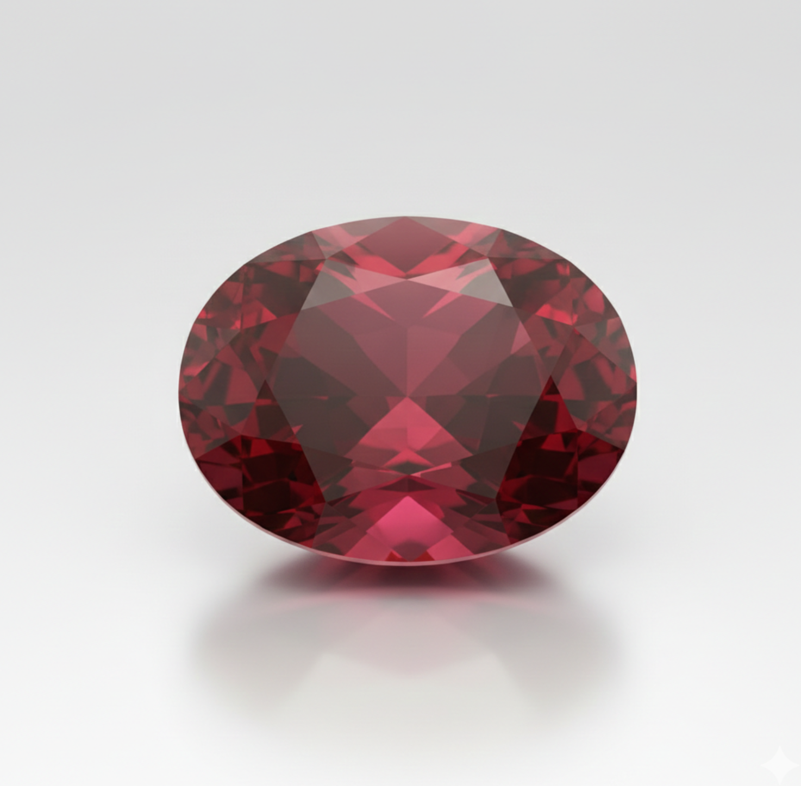

॥ ॐ घृणि सूर्याय नमः ॥
📜 पौराणिक महत्व: सूर्य देव का अंश। इसे 'रत्नराज' कहा जाता है। उज्जैन के सूर्य कुंड पर विशेष अनुष्ठान द्वारा इसे सिद्ध किया जाता है।
✨ लाभ: सरकारी नौकरी, राजनीति में सफलता, आत्मविश्वास और हड्डियों की मजबूती।
📅 विधि: रविवार प्रातः, अनामिका उंगली, स्वर्ण/तांबा।
₹299 में परामर्श लें